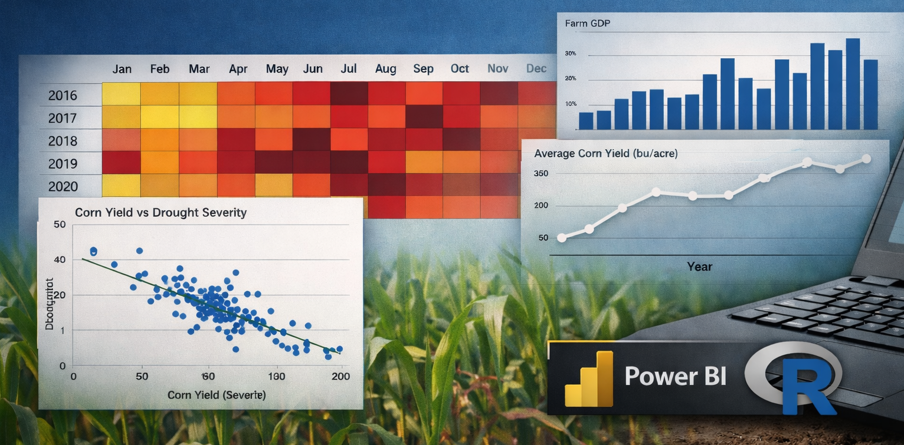
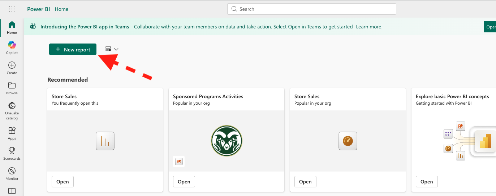
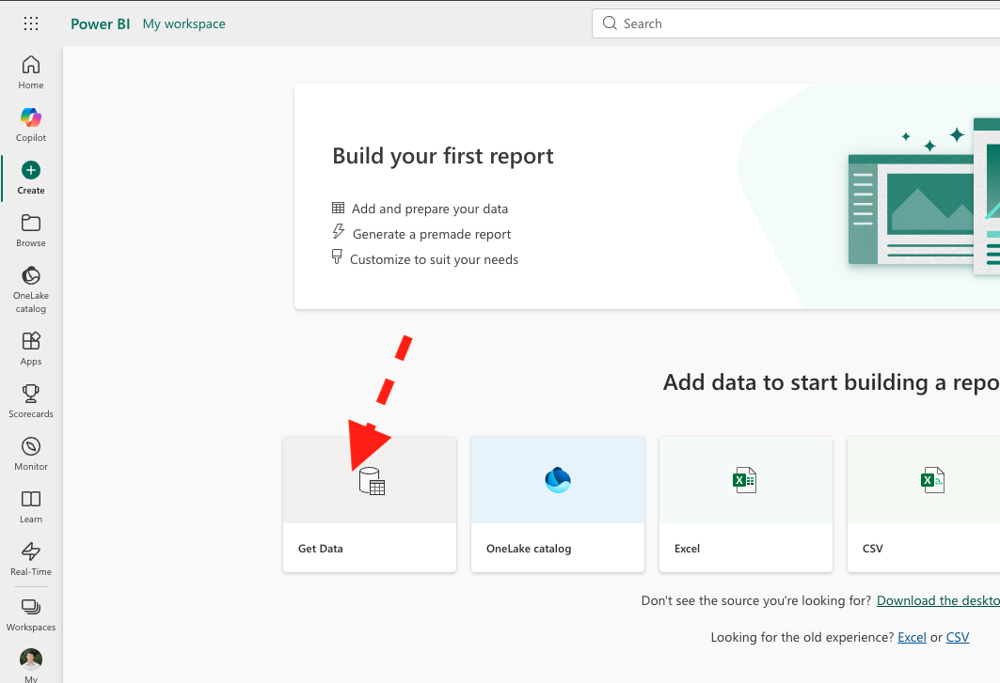
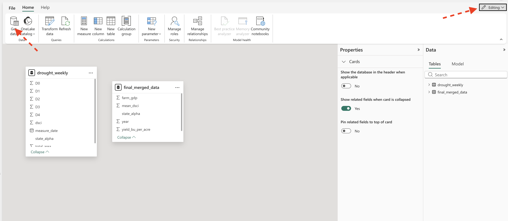
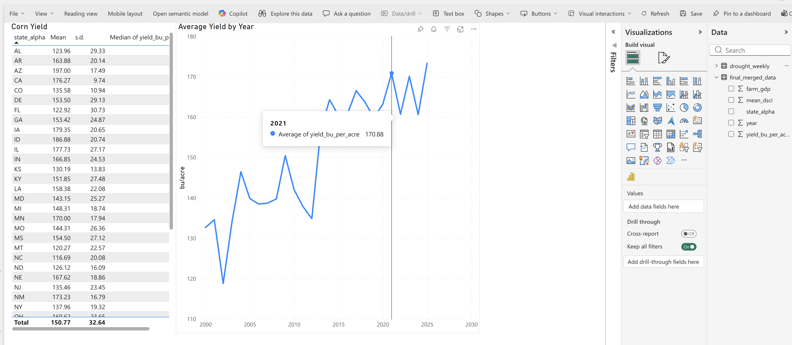
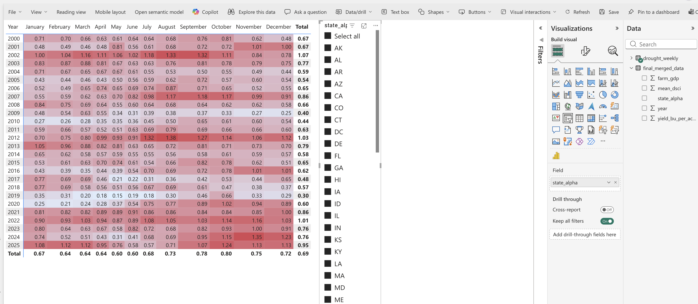
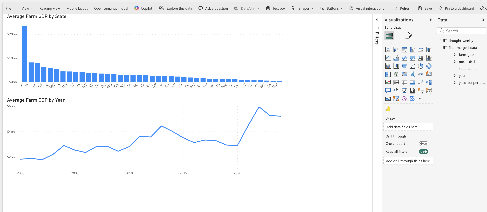
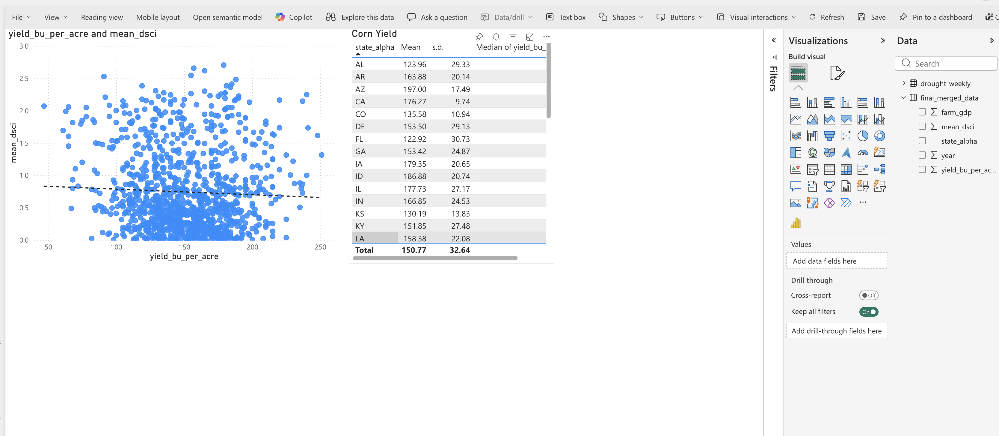

library(tidyverse)
library(lubridate)
#Load the merged dataset
combined_dat <- read_csv("https://jbayham.github.io/arec-330/modules/05_EDA/includes/final_merged_data.csv")Week 5 Lab: Exploratory Data Analysis

Exploratory Data Analysis (EDA) is the process of investigating a dataset to understand its structure, patterns, relationships, and potential problems before formal modeling begins.
Power BI is designed to make many of these explorations fast and intuitive. With just a few clicks, you can:
- Build interactive dashboards
- Filter across time and geography
- Create heatmaps and summary visuals
- Identify patterns that would be difficult to see in raw tables
However, Power BI is primarily a business intelligence and visualization tool, not a statistical computing environment. While it excels at interactive exploration and dashboard building, some statistical tasks—such as calculating correlation coefficients or running regression models—require more deliberate setup or are better handled in statistical software like R.
In this lab, you will use Power BI to explore patterns in the data visually and interactively. For formal statistical summaries (such as correlation), we will rely on R. This reflects a realistic workflow used by analysts: business intelligence tools for exploration and communication, and statistical software for formal quantitative analysis.
Learning Objectives
By the end of the lab, you will be able to:
- Use Power BI to explore patterns across time and space
- Construct visualizations that reveal structure in the data
- Interpret visual evidence before turning to formal statistical models
- Understand the complementary roles of visualization tools and statistical software
Lab Notebook
Open up a word processing document (e.g., Google Doc, Word, or plain text) to serve as your lab notebook. Use this to respond to questions, document decisions, and reflect on the process. You should also comment your R script thoroughly to explain your code and rationale for each step.
Section 1: Power BI for Exploratory Data Analysis
Power BI is a desktop application (Windows only) and a web application. We will use the web application for this lab. We all have access to Power BI through our university accounts. I visit my onedrive online and click on the Power BI icon to launch the web app in the upper left. You can also go directly to https://app.powerbi.com/ and log in with your university credentials.
We will start by creating a report. 
Once we have a blank report, we can load our data. We will use the merged dataset you created in the previous lab, which contains corn yield, drought severity, and farm GDP by state and year. If you haven’t already, download the lab 5 datasets here:
You can load this dataset into Power BI by clicking on “Get Data” and choosing the final_merged_data.csv file from your computer. 
We want to add a dataset to our report, so we need to open the semantic model view. This allows us to see the relationships between tables. We will add the drought_weekly.csv dataset, which contains the original weekly drought data before we aggregated it to annual level. Make sure to enable editing mode (upper right), then click “Get data” from the ribbon. 
Save the report as lab_05.
Page 1: Corn
The first page of our report will focus on corn yields. Name it “Corn”. We will create a table with mean, standard deviation, and median yields by state. We will also create a line chart to show how yields have changed over time.
To create the table, we can use the “Table” visual and drag the state_alpha variable to the Columns area. Then add the yield_bu_per_acre variable to the Columns. We can then click on the dropdown next to yield_bu_per_acre in the values section and select “Average” to get the mean yield. We can repeat this process to add standard deviation and median as well. Clicking the same dropdown allows you to rename the columns to something more descriptive (e.g., “Mean”, “s.d.”, “Median”). Change the graphic title to “Corn Yield” by choosing the “Format your visual” in the visualizations pane. Remove the x-axis title and change the y-axis title to “bu/acre”.
To create the line chart, we can use the “Line chart” visual. We will drag year to the x-axis and yield_bu_per_acre to the y-axis. Again, change the aggregation to “Average” to get the mean yield by year. Change the title to “Average Yield by Year”.
Both visualizations are interactive and act like filters for the other. For example, if you click on a specific state in the table, the line chart will update to show the yield trend for that state only. This allows you to explore how yields have changed over time for different states and identify any patterns or anomalies.

Question 1: What patterns do you see in the corn yield data across states and over time? Are there any states that stand out as having particularly high or low yields? Are there any noticeable trends over time? Answer in your notebook.
Page 2: Drought
The second page of our report will focus on drought. Name it “Drought”. We will create a heatmap to show drought by year and month. Using the drought_weekly data, select the dsci variable as the value, year as the Rows, and month as the Columns. Note that measure_date is a date type, so Power BI can parse out month and year. We can change the background color of the heatmap to reflect the severity of drought. Under Format your visual, go to “Cell elements” and toggle “Background color”. Click the fx button and make the high values a red color.
Let’s add a slicer to filter the heatmap by state. This will allow us to see how drought patterns vary across states. To add a slicer, select the “Slicer” visual and drag state_alpha to the field. Now you can click on different states in the slicer to see how drought patterns change.

Question 2: Use your visualization to identify drought patterns in Colorado. Which months and years had the most severe drought conditions? How does this compare to other states? Answer in your notebook.
Page 3: Farm GDP
The third page of our report will focus on farm GDP. Name it “Farm GDP”. We will create a bar chart to compare Farm GDP across states. Select vertical column/bar chart. Drag state_alpha to the x-axis and farm_gdp to the y-axis. Change the aggregation to “Average”. Change the title to “Average Farm GDP by State”.
Add a line chart below showing the trend of farm GDP over time. Drag year to the x-axis and farm_gdp to the y-axis. Change the aggregation to “Average”. Change the title to “Average Farm GDP by Year”.
Again these visualizations are interactive. Clicking on a state in the bar chart will filter the line chart to show the trend for that state. Similarly, clicking on a year in the line chart will filter the bar chart to show farm GDP for that year.

Question 3: What patterns do you see in farm GDP across states and over time? Are there any states that stand out as having particularly high or low farm GDP? Are there any noticeable trends over time? Answer in your notebook.
Page 4: Correlation
Finally, let’s add a scatter plot to explore the relationship between drought severity and corn yield. Create a new page called “Scatterplot”. Create a scatter plot. Drag mean_dsci to the y-axis and yield_bu_per_acre to the x-axis. Change the aggregation to “Don’t Summarize”. Change the title to “Corn Yield vs Drought Severity”. Add a trend line by going to “Analytics” in the visualizations pane and adding a “Linear” trend line.
Go back to the “Corn” page and copy the table of summary statistics (mean, s.d., median) for corn yield. Paste this table onto the “Correlation” page to serve as a slicer for the scatter plot.

Question 4: What does the scatter plot tell you about the relationship between drought severity and corn yield? Is there a clear negative relationship, where higher drought severity corresponds to lower yields? Are there any outliers or exceptions to this pattern? How does the trend line help you interpret the overall relationship? Answer in your notebook.
Section 2: R for Statistical Summaries
Preliminaries
- Create a folder called
lab_05and navigate there in RStudio. - Create a new R script called
lab_05.Rin yourlab_05folder. - Write a brief comment at the top describing the purpose of the script and your name.
- Load required libraries at the top:
Distributions
Visualizing the distribution of a variable is a key part of EDA. Common plots include:
- Histograms
- Boxplots
We will use a package called ggplot2 to create these visualizations. The syntax for ggplot2 can be a bit tricky at first, but it allows for great flexibility and customization. The idea behind ggplot2 is to build plots layer by layer. You start with a base plot that defines the data and aesthetics (e.g., which variable goes on the x-axis), and then you add layers to specify the type of plot (e.g., histogram, boxplot) and customize it.
The basic structure is:
ggplot(data = your_data, aes(x = variable)) +
geom_histogram()Histogram
A histogram shows the distribution of a single numeric variable by grouping values into bins and counting how many observations fall into each bin. Let’s create a histogram of corn yields:
ggplot(data = combined_dat, aes(x = yield_bu_per_acre)) +
geom_histogram() Question 5: What does the histogram of corn yields tell you about the distribution of yields across states and years? Are there any noticeable patterns, such as skewness or outliers? Answer in your notebook. Create historgrams for mean_dsci and farm_gdp as well, and describe their distributions in your notebook.
Boxplot
A boxplot (or box-and-whisker plot) summarizes the distribution of a numeric variable by showing the median, quartiles, and potential outliers. Let’s create a boxplot of farm GDP by state:
ggplot(data = combined_dat, aes(y = state_alpha, x = farm_gdp)) +
geom_boxplot() Correlation
Correlation measures the strength and direction of a linear relationship between two numeric variables. The correlation coefficient (r) ranges from -1 to 1, where: - r = 1 indicates a perfect positive linear relationship - r = -1 indicates a perfect negative linear relationship - r = 0 indicates no linear relationship
To calculate the correlation between corn yield and farm GDP, we can use the cor() function in R: umf#| eval: false cor(combined_dat$yield_bu_per_acre, combined_dat$farm_gdp, use = "complete.obs")
Question 6: What does the correlation coefficient between corn yield and farm GDP tell you about their relationship? Is it positive, negative, or close to zero? What might this imply about how drought affects not just yields but also economic output? Answer in your notebook.
Summary Statistics
Summary statistics provide a concise description of the main features of a dataset. Common summary statistics include: - Mean: The average value of a variable. - Median: The middle value when the data is sorted. - Standard Deviation: A measure of the spread of the data around the mean. - Minimum and Maximum: The smallest and largest values in the dataset.
We can use the summarise() function from the dplyr package to calculate these summary statistics for corn yield. For example, to calculate the mean, median, and standard deviation of corn yield by state:
summarise(combined_dat,
mean_yield = mean(yield_bu_per_acre, na.rm = TRUE),
median_yield = median(yield_bu_per_acre, na.rm = TRUE),
sd_yield = sd(yield_bu_per_acre, na.rm = TRUE),
min_yield = min(yield_bu_per_acre, na.rm = TRUE),
max_yield = max(yield_bu_per_acre, na.rm = TRUE)
)Because this is a common task, others have created packages to make it easier. The skimr package provides a convenient function called skim() that gives you a comprehensive summary of your data, including the mean, median, standard deviation, and more for each variable in your dataset:
library(skimr) #install.packages("skimr") if you don't have it already
sum_stats <- skim(combined_dat)
print(sum_stats)Question 7: Create a table in your notebook summarizing the mean, median, standard deviation, minimum, maximum, number of observations, and number of missing values for corn yield, drought severity, and farm GDP. Format the table neatly in your notebook. Replace the variable names with descriptive names that humans can easily understand. What do these summary statistics tell you about the central tendency and variability of these variables? Are there any surprising values or patterns in the summary statistics? Answer in your notebook.
Codebook
A codebook is a document that describes the variables in a dataset, including their names, descriptions, data types, and source information. It serves as a reference for anyone who uses the dataset, helping them understand what each variable represents and how to interpret it.
Question 8: Create a codebook for the final_merged_data.csv dataset. For each variable, provide the following information:
- Variable name
- Description (what does the variable represent?)
- Data type (e.g., numeric, categorical)
- Units of measurement (if applicable)
- Source of the data (where did this variable come from?)
Format this codebook as a table in your notebook. This will be a useful reference for you and others who may use this dataset in the future.
Deliverables
Submit the following on Canvas:
Power BI Report: Export your Power BI report as a PDF (lab_5_report.pdf) and upload it to Canvas. Make sure it contains four pages (Corn, Drought, Farm GDP, Scatterplot).
log file (
lab_05.log): Organize your code and make sure it runs without errors. Generate a log file calledlab_05.logusing the sink-source-sink pattern from previous labs. The log file should include all the code you wrote for this lab, along with comments explaining each step.Lab Notebook: Compile your answers to all 8 questions in a single document (e.g., Google Doc, Word, or PDF). Make sure to clearly label each question and provide thoughtful, detailed responses based on your analysis.